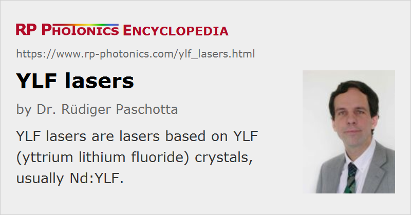

YLF Lasers
Definition: lasers based on YLF (yttrium lithium fluoride) crystals, usually Nd:YLF
More specific term: solid-state lasers
German: YLF-Laser
Categories: optical materials, lasers
How to cite the article; suggest additional literature
Author: Dr. Rüdiger Paschotta
The term YLF laser is usually used for lasers based on neodymium-doped YLF (Nd3+:YLF) crystals, although there are other rare-earth-doped YLF crystals, e.g. with ytterbium, erbium, thulium, holmium or praseodymium doping. YLF is the acronym for yttrium lithium fluoride (YLiF4). Due to the similar size, yttrium ions can be replaced with laser-active rare earth ions without strongly affecting the lattice structure.
YLF is birefringent, which eliminates thermally induced depolarization loss. Also, the gain and the emission wavelength of Nd:YLF are polarization-dependent: there is the stronger 1047-nm line for π polarization, and a weaker one at 1053 nm for σ polarization. The 1053-nm line fits well to the gain peak of Nd:glass, which makes Nd:YLF seed lasers and preamplifiers suitable for Nd:glass amplifier chains. There are additional transitions at 1321 nm (π) and 1313 nm (σ), which allow for, e.g., red light generation via frequency doubling.
The negative thermo-optic coefficient dn / dT leads to a defocusing thermal lens, which may be approximately compensated by the focusing lens from bulging of the end faces, if a suitable design is chosen. Nd:YLF lasers can be diode-pumped or lamp-pumped. Compared with Nd:YAG (→ YAG lasers), Nd:YLF has a lower thermal conductivity, but nevertheless exhibits weaker thermal distortions (due to the weakly negative dn / dT), thus allows a better beam quality, has significantly anisotropic thermal expansion and a lower fracture resistance (limiting the output power), and a longer upper-state lifetime (which is favorable for, e.g., diode-pumped Q-switched lasers with high pulse energy). Another remarkable feature is the high UV transparency, which is favorable for pumping with xenon flashlamps.
Suppliers
The RP Photonics Buyer's Guide contains 18 suppliers for YLF lasers.
Questions and Comments from Users
Here you can submit questions and comments. As far as they get accepted by the author, they will appear above this paragraph together with the author’s answer. The author will decide on acceptance based on certain criteria. Essentially, the issue must be of sufficiently broad interest.
Please do not enter personal data here; we would otherwise delete it soon. (See also our privacy declaration.) If you wish to receive personal feedback or consultancy from the author, please contact him e.g. via e-mail.
By submitting the information, you give your consent to the potential publication of your inputs on our website according to our rules. (If you later retract your consent, we will delete those inputs.) As your inputs are first reviewed by the author, they may be published with some delay.
See also: YAG lasers, vanadate lasers, laser crystals, neodymium-doped gain media, rare-earth-doped gain media, solid-state lasers, polarization of light
and other articles in the categories optical materials, lasers
|  |
If you like this page, please share the link with your friends and colleagues, e.g. via social media:
These sharing buttons are implemented in a privacy-friendly way!